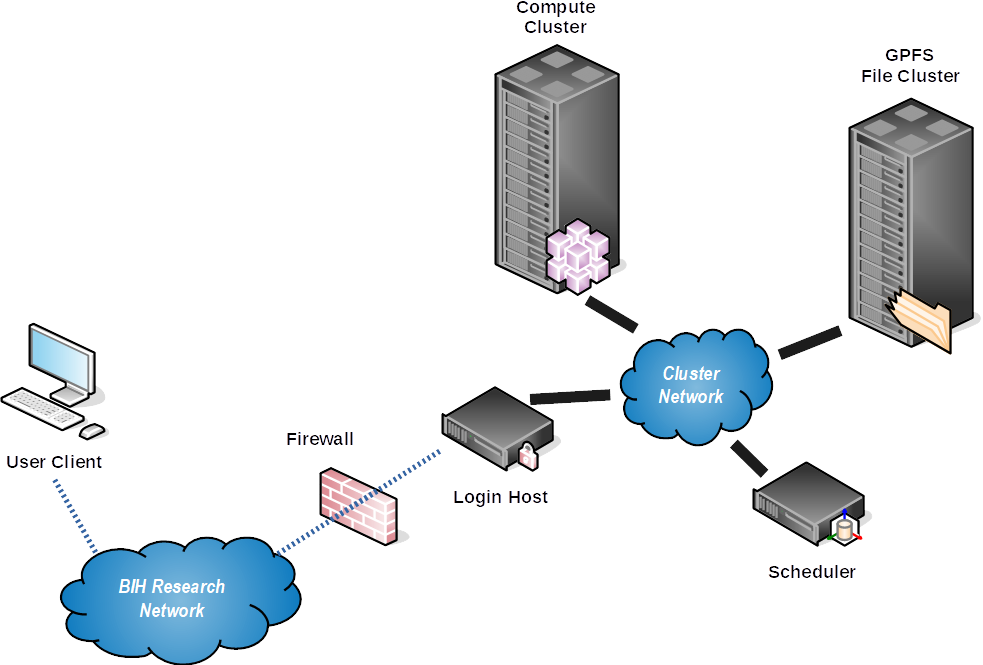

For the Impatient¶
This document describes the fundamentals of using the BIH cluster. More detailed documentation is available in the rest of the Wiki. Start exploring from the Wiki home.
Cluster Hardware and Scheduling¶
The cluster consists of the following major components:
- 2 login nodes for users
med-login1andmed-login2(for interactive sessions only), - 2 nodes for file transfers
med-transfer1andmed-transfer2, - a scheduling system using SLURM (SGE is being phased out),
- approximately 200 general purpose compute nodes
med01XX,med02XX,med05XX,med06XX,med07XX. - a few high memory nodes
med040[1-4], - 4 nodes with 4 Tesla GPUs each (!)
med030[1-4], - a high-performance, parallel GPFS file system with 2.1 PB, by DDN mounted at
/fast, - a slower "classic" ZFS file system available through NFS with ~250 TB mounted at
/slow.
This is shown by the following picture:

Differences Between Workstations and Clusters¶
The differences include:
- The directly reachable login nodes are not meant for computation!
Use
srunto go to a compute node. - Every time you type
srunto go to a compute node you might end up on a different host. - Most directories on the nodes are not shared, including
/tmp. - The
/fastdirectory is shared throughout the cluster which contains your home, group home, and project directories. - You will not get
rootorsudopermissions on the cluster. - You should use batch jobs (
sbatch) over calling programs interactively.
What the Cluster Is and Is NOT¶
NB: the following might sound a bit harsh but is written with everyone's best intentions in mind (we actually like you, our user!) This addresses a lot of suboptimal (yet not dangerous, of course) points we observed in our users.
IT IS
- It is scientific infrastructure just like a lab workbench or miscroscope. It is there to be used for you and your science. We trust you to behave in a collaboratively. We will monitor usage, though, and call out offenders.
- With its ~200 nodes, ~6400 threads and fast parallel I/O, it is a powerful resource optimized for bioinformatics sequencing data analysis.
- A place for data move data at the beginning of your project. By definition, every project has an end. Being the place it is, your project data needs to leave the cluster at the end of the cluster.
- A collaborative resource with central administration managed by BIH HPC IT and supported via hpc-helpdesk@bihealth.de
IT IS NOT
- A self-administrated workstation or servers.
- You will not get
sudo. - We will not install software beyond those in broad use and available in CentOS Core or EPEL repositories.
- You can install software in your user/group/project directories, for example using Conda.
- You will not get
- A place to store primary copies of your data. You only get 1 GB of storage in your home for scripts, configuration, and documents.
- A safe place to store data. Only your 1 GB of home is in snapshots and backup. While data is stored on redundant disks, technical or administrative failure might eventually lead to data loss. We do everything humanly possible to prevent this. Despite this, it is your responsibility to keep important files in the snapshot/backup protected home, ideally even in copy (e.g., a git repository) elsewhere. Also, keeping safe copies of primary data files, your published results, and the steps in between reproducible is your responsibility.
- A place to store data indefinitely. The fast GPFS storage is expensive and "sparse" in a way. The general workflow is: (1) copy data to cluster, (2) process it, creating intermediate and final results, (3) copy data elsewhere and remove it from the cluster
- Generally suitable for primary software development. The I/O system might get overloaded and saving scripts might take some time. We know of people who do this and it works for them. Your mileage might vary.
Locations on the Cluster¶
- Your home directory is located in
/fast/users/$USER. Your home is for scripts, source code, and configuration only. Use yourworkdirectory for large files. The quota in thehomedirectory is 1 GB but we have nightly snapshots and backups thereof. - Your work directory is located in
/fast/users/$USER/work. This is where you should place large files. Files in this location do not have snapshots or backups. - The directory (actually a GPFS file set)
/fast/users/$USER/scratchshould be used for temporary data. All data placed there will be removed after 4 weeks. - If you are part of an AG/lab working on the cluster, the group directory is in
/fast/groups/$AG. - Projects are located in
/fast/projects/$PROJECT.
Temporary Directories¶
Note that you also have access to /tmp on the individual nodes but the disk is slow and small.
If you are processing large NGS data, we recommend you create /fast/users/$USER/scratch/tmp and set the environment variable TMPDIR to point there.
However, for creating locks special Unix files such as sockets or fifos, /tmp is the right place.
Note that files placed in your scratch directory will be removed automatically after 4 weeks.
Do not place any valueable files in there.
First Steps on the Cluster¶
Connecting to the Cluster¶
- From the Charite, MDC, and BIH networks, you can connect to the cluster login nodes
med-login{1,2}.bihealth.org.- For Charite users, your name is
${USER}_c, for MDC users, your account is${USER}_mwhere$USERis the login name of your primary location.
- For Charite users, your name is
- From the outside, for MDC users, the cluster is accessible via
ssh1.mdc-berlin.de(you need to enable SSH key agent forwarding for this)- Note that you have to use your MDC user name (without any suffix
_m) for connecting to this host. - Also note that BIH HPC IT does not have control over
ssh1.mdc-berlin.de. You have to contact MDC IT in case of any issues.
- Note that you have to use your MDC user name (without any suffix
- From the outside, for Charite users, there is no SSH hop node. Instead, you have to apply for VPN through Charite Geschäftsbereich IT. You can use this form availble in Charite Intranet for this. Please refer to the Charite intranet or helpdesk@charite.de for more information.
Connecting to Compute Node through Login Node¶
After logging into the cluster, you are on the login node med-login<X> (<X> can be either 1 or 2).
When transferring files, use the med-transfer1 or med-transfer2 nodes.
You should not do computation or other work on the login or file transfer nodes, but use the compute nodes instead.
Typically, you'll create an interactive session on a compute node using the srun command.
Submitting Jobs¶
While not recommended, you can perform computations (such as using BWA) in the interactive session.
However, when the connection is interrupted, your computation process will be stopped.
It is therefore recommended you submit jobs using the sbatch command (or use screen or tmux).
Inspecting Jobs and the Cluster¶
You can inspect your currently running jobs with squeue, and kill them using scancel.
You can inspect jobs that have finished with sacct, and see the cluster nodes using sinfo.